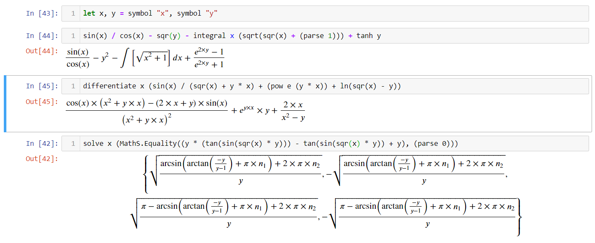

Jupyter
← Back to the main page
Here we will cover usage of the library for research purposes.
Installation
Thanks to dotnet/interactive, AM
is now convenient to use in Jupyter notebooks. Provided that you already installed
both Jupyter and dotnet/interactive, this is the way you enable Jupyter's features
for AM:
#r "nuget:AngouriMath.Interactive, *-*"
Interactive.magic();
Interactive.magic() will bind the LaTeX renderer from MathJax to any type inherited
from ILatexiseable.

It is highly likely that there will be more features specific for Jupyter in AM.